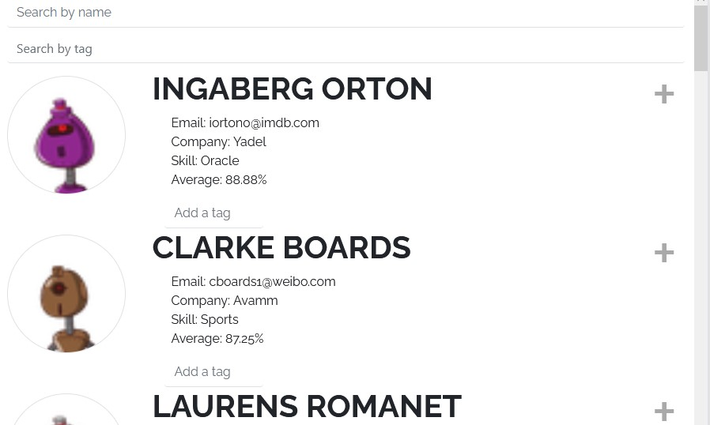
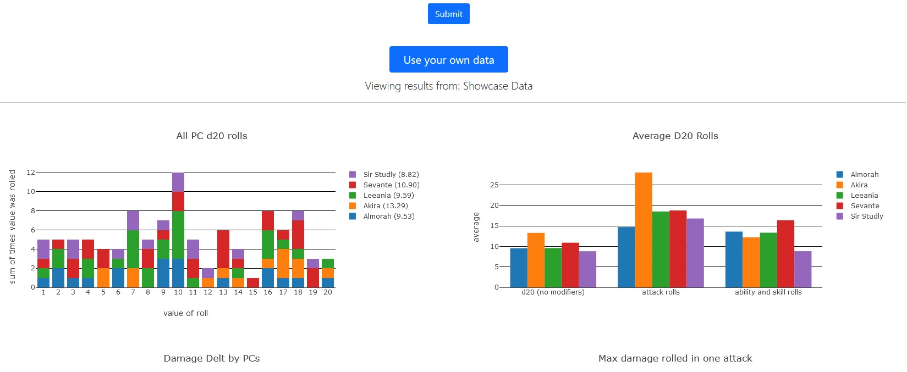
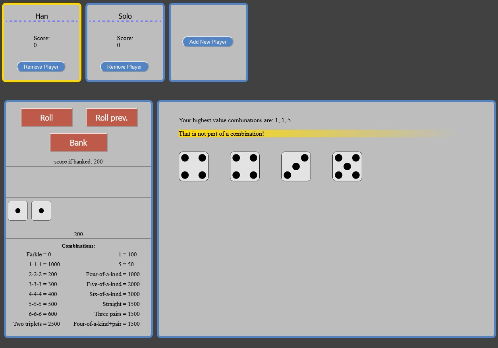
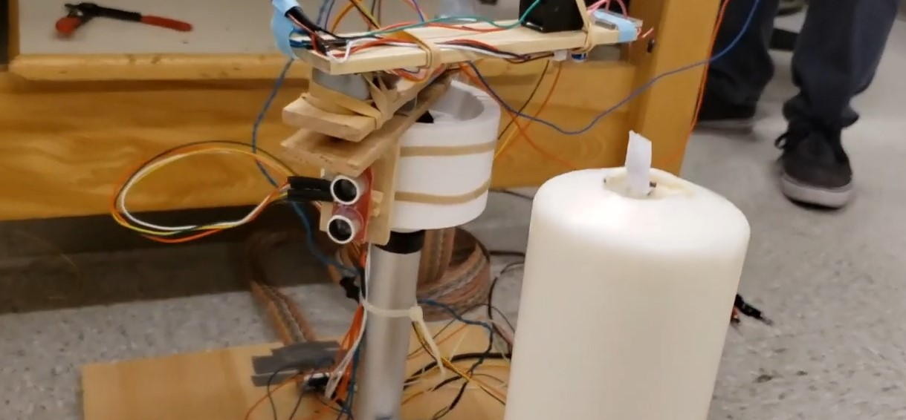

I'm a recent graduate with a passion for anything related to physics, software, problem solving, and learning new things.
I have been working with computers all my life and have been writing code since I was a teenager. I decided to start my career in web and software development because I realized how much I enjoy it. Currently, I'm focused on the front-end technologies such as HTML, CSS, Javascript, and React. I also have experience in many other coding languages such as Python, Mathematica, and C++.
Skills
In my college education and personal development I have learned many modern technologies since 2016. I have used these skills to predict weather patterns, calculate the trajectory of asteroids, create a robot arm that could find a candle and light it with plasma, and built personal websites.
HTML
CSS
Javascript
NodeJS
ReactJS
Python
C++
Mathematica
git
Matlab
Bash/Linux
Projects
Here are some examples of projects I have worked on:
Student Search React App
This project takes mock student data from a third party API and then displays the information in a searchable list. It also has the added functionallity of being able to add tags to any student and then searching for students with those tags.
Try it out Source codeD&D Dice Roll Statistics
Solo React web project that is designed to summarize the dice roll results of a Dungeons and Dragons game by uploading your data. Utilized API from FoundryVTT to gather data and synthesized it with javascript to plot trends of virtual dice rolls.
Try it out Source codeFarkle - Dice Game
Implemented a popular dice game as a website that handles all the mechanics for you in an intuitive design. Worked in a team of two to plan and build the website. Designed requirements, user flows, and mock ups to guide development. Implemented a collaborative code review process using Github.
Try it out Source codeCandle Igniting Plasma Robot Arm
Worked with a partner to plan and build a robotic arm that detects a candle’s location and ignites its wick using a plasma arc. Produced a video and a written proposal for building schedule, budget, and design. Used Arduino technology and designed/3D-printed mechanical parts using Solidworks.
Video Demo Source codeEducation & Experience
University of California, San Diego
B.S. in Physics with specialization in Astrophysics, 2020, GPA 3.6
Moorpark Community College
Associates in Physics, Math, and Natural Sciences, 2018, GPA 3.8
Assistant Microbiologist
Eurofins Food Integrity and Innovation, 2020-2021
- Learned and performed various scientific procedures to analyze food for pathogens so that companies can safely sell products to the general public.
- Process improvement; worked cross-functionally to come up with an efficient system for receiving products from clients and analyzing them.
Undergraduate Researcher
Scripps Institute of Oceanography, 2019-2020
- Analyzing data to compare the accuracy of different prediction methods of Atmospheric River (AR) events and the associated precipitation.
- Wrote MATLAB and python scripts for data analysis, performed a literature review to compare various prediction methods, and learned relevant atmospheric and thermodynamic physics to address the research objective.